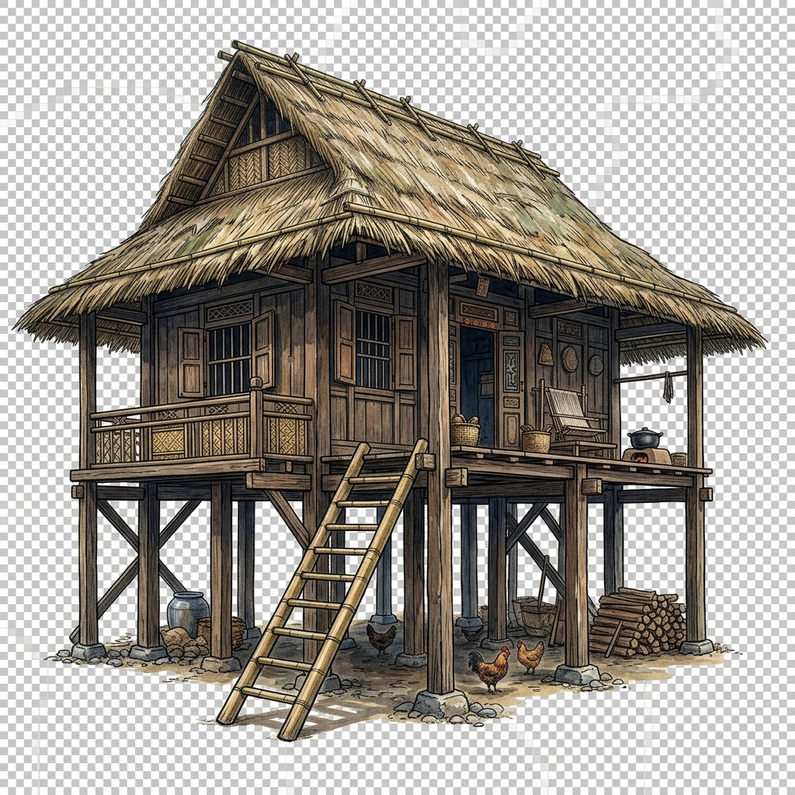
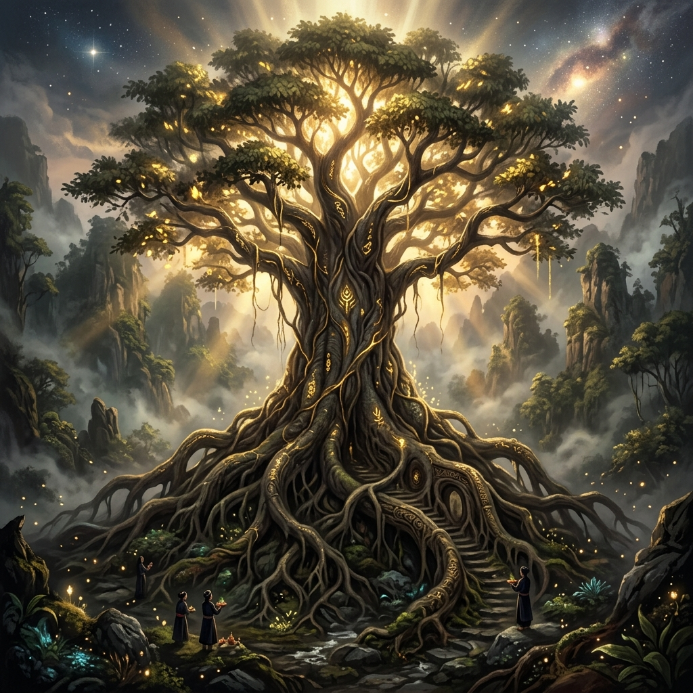
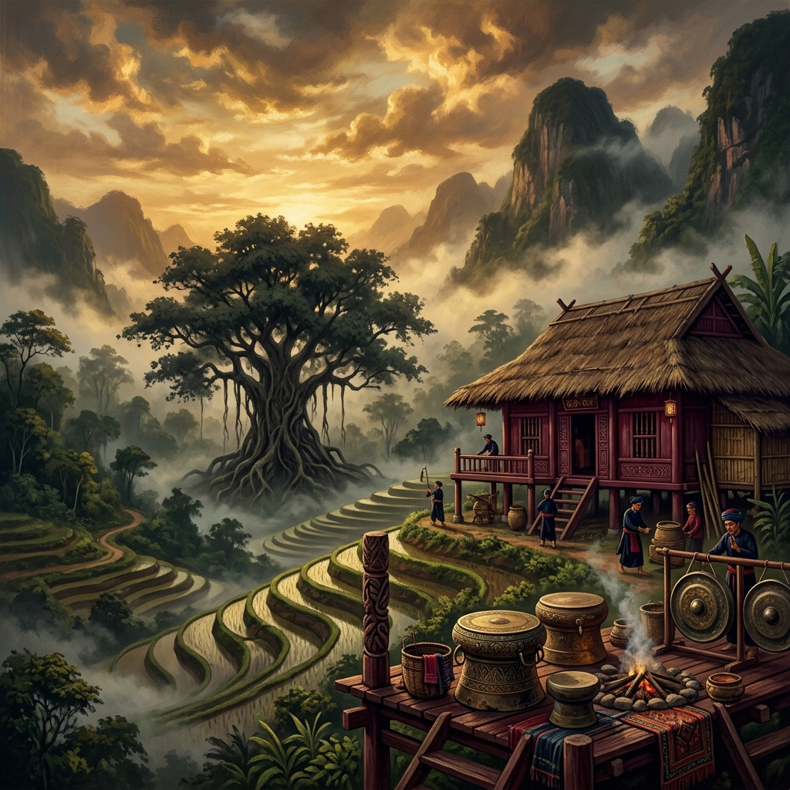
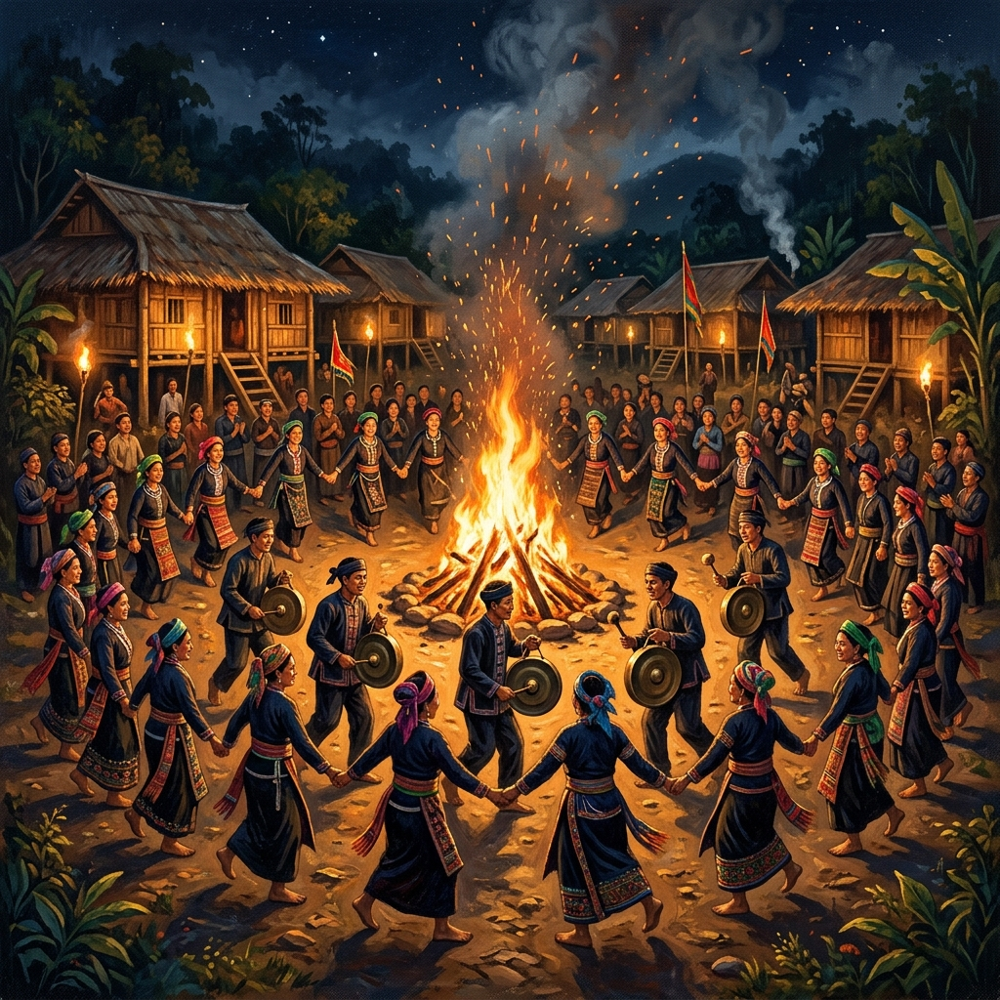
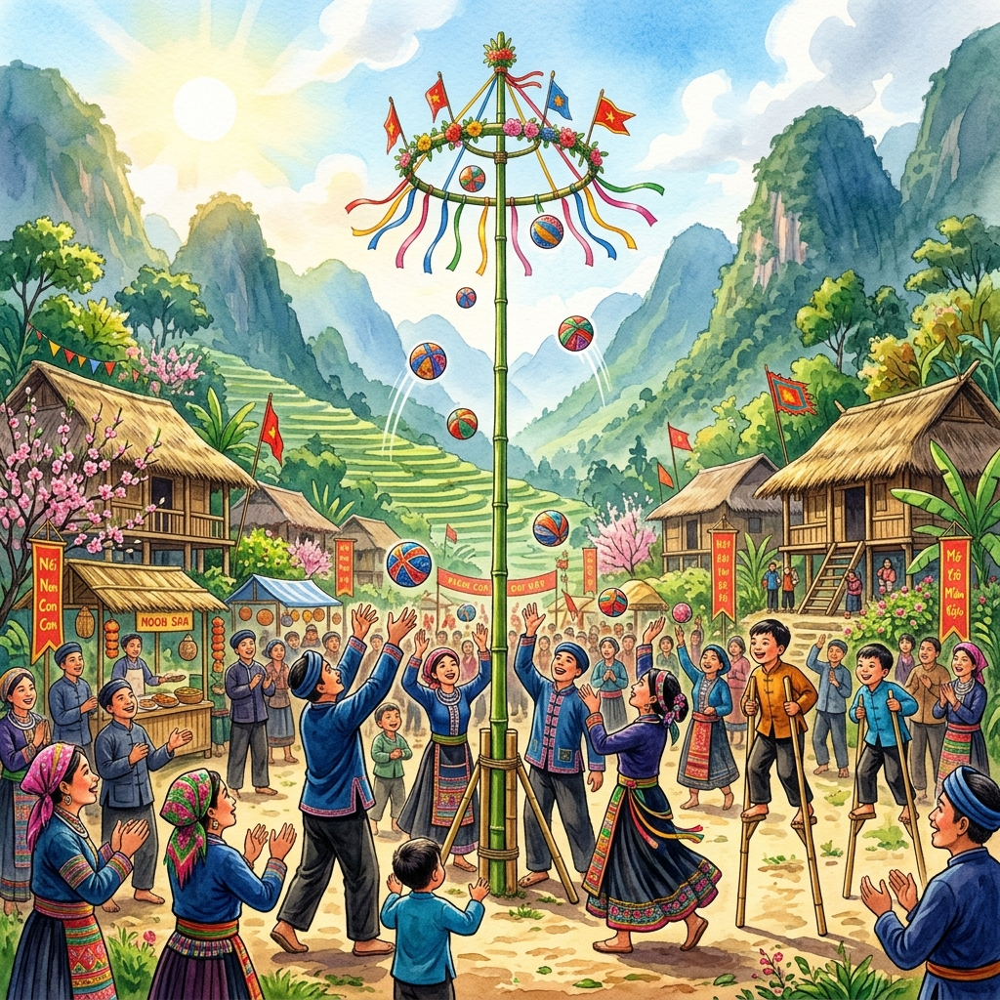

SỬ THI
TÂN DIỆN
Hành trình khám phá 26 phần sử thi Đẻ đất đẻ nước. Bước vào thế giới sử thi Mường, nơi đất trời, muôn loài, con người và bản Mường được sinh ra qua lời kể ngâm vang ngàn đời.

TRẠM KỂ
"Chạm miền sử thi – Trạm kể Mường xưa"
Đẻ đất đẻ nước (tiếng Mường: Te tấc te đác) là bộ sử thi thần thoại đồ sộ của dân tộc Mường. Tác phẩm là “bách khoa toàn thư” dân gian, phản ánh nhận thức, đời sống và khát vọng của người Mường cổ trong công cuộc kiến tạo thế giới và xây dựng cộng đồng.
Đẻ đất đẻ nước không chỉ là câu chuyện của người Mường trong quá khứ, mà còn là ký ức văn hóa đang chờ được thế hệ hôm nay lật mở. Sử thi tân diện tạo nên những điểm chạm số hóa để người trẻ nghe, nhìn, tương tác và tiếp tục hành trình của sử thi trong đời sống đương đại.
Hành Trình Khám Phá
26 Phần Sử Thi
Theo dõi toàn bộ hành trình từ lúc vũ trụ còn hỗn mang đến khi bản Mường hình thành ổn định.
Xem 26 phầnBiểu Tượng Mo
Đất, nước, cây si, cồng chiêng, nhà sàn và các hình tượng thần thoại đặc sắc của Mo Mường.
Khám phá biểu tượngKhông Gian Bản Mường
Bước vào đời sống, tìm hiểu kiến trúc nhà sàn, cồng chiêng, ẩm thực dân dã và các lễ hội mùa xuân.
Xem không gianVR Tương Tác 3D
Tự tay tương tác với các đồ dùng cúng tế, sinh hoạt trong nhà sàn truyền thống người Mường xưa.
Vào VRDòng Chảy Sử Thi Qua 6 Chặng
Mười sáu vạn câu thơ Mo được xâu chuỗi mạch lạc thành một hành trình vĩ đại xây dựng thế giới
Hình thành Đất, Nước, Con người
Từ thuở ban sơ hỗn mang, đất nước được kiến tạo, cây si thần lớn lên đẻ ra vạn vật và con người.
Xây dựng cơ sở vật chất
Con người biết làm nhà sàn che mưa nắng, tìm ra lửa ấm, thuần hóa lúa gạo, trâu bò và men rượu cần.
Lo ổn định gia đạo
Lang Cun Cần lấy vợ, tìm kiếm bạn đời lập nên khuôn phép hôn nhân gia đình cho các dòng họ bản mường.
Kiến lập trật tự nước nhà
Chế tác trống đồng, phân chia ruộng đất canh tác, tìm kiếm thủ lĩnh tối cao dựng lên nhà Chu.
Xung đột & Chiến công
Vượt qua biến cố đốt nhà Chu, đoàn kết săn Moong Lồ (thú dữ), đánh cá điên, trừ ma ruộng bảo vệ mùa màng.
Hoàn chỉnh chế độ cai trị
Lập ra nghi lễ phục trang, quy định luật tục cai trị gìn giữ bờ cõi bản Mường được bình yên no ấm.
Những Phần Sử Thi Nổi Bật
Cùng khám phá những chương nổi bật của sử thi Đẻ đất đẻ nước để hiểu thêm về thế giới quan đồ sộ của người Mường.

Đẻ Cây Si
Cây si vươn lên, nối trời với đất và mở ra mầm sống trong thế giới Mường.
Khám phá chương này
Đẻ Người
Con người bước vào thế giới, mang theo khởi đầu của giống nòi và cộng đồng Mường.
Đọc chương này
Đẻ Trống đồng
Tiếng trống vang lên, nối con người với lễ hội, nghi thức và ký ức cộng đồng.
Nghe & Khám phá
Săn Moong Lồ
Bản Mường bước vào thử thách lớn, nơi lòng can đảm và tinh thần cộng đồng được đánh thức.
Xem chiến côngSẵn Sàng Chạm Vào Miền Sử Thi?
Bước vào không gian văn hóa Mường, nơi tiếng cồng chiêng và những câu chuyện sử thi cùng đưa bạn ngược dòng thời gian.